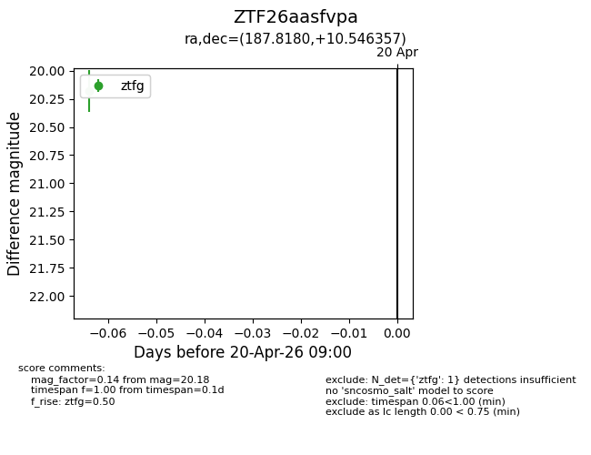
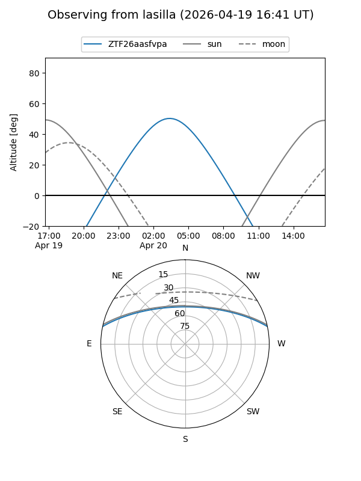
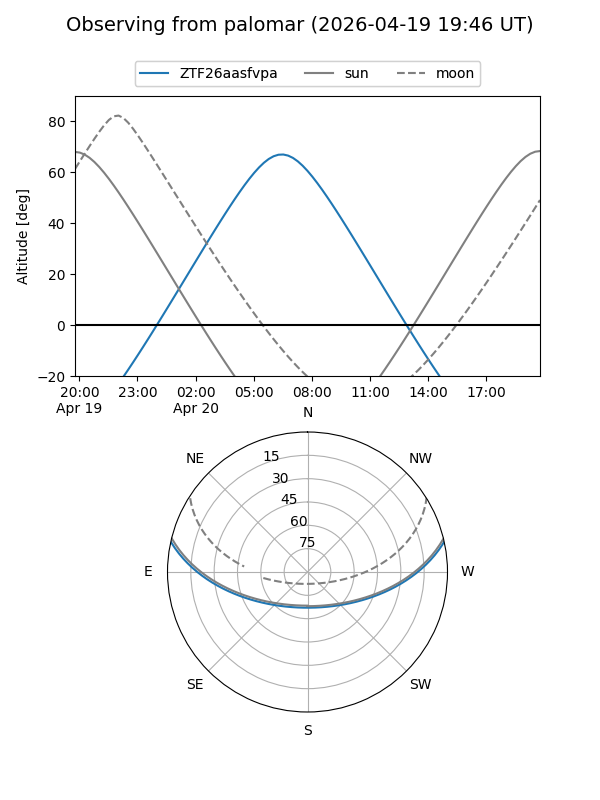

ZTF26aasfvpa
Target ZTF26aasfvpa at 2026-04-20 09:10
Aliases and brokers:
FINK: link
Lasair: link
ALeRCE: link
alt names
ZTF26aasfvpa (ztf,fink_ztf)
Coordinates:
equatorial (ra, dec) = 187.8180,+10.54636
equatorial (HMS+DMS) = 12:31:16.32,+10:32:46.89
galactic (l, b) = (285.9927,+72.75154)
Flags:
Photometry:
last ztfg=20.18
1 ztfg detections
Lightcurve

Visibility


Additional plots